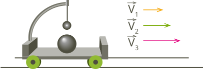
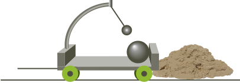
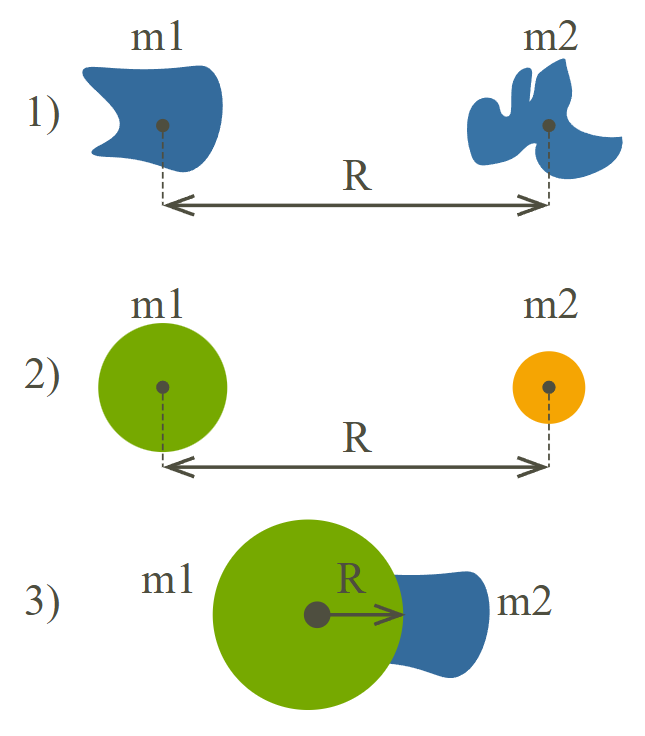
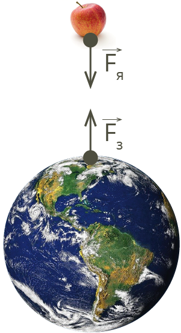
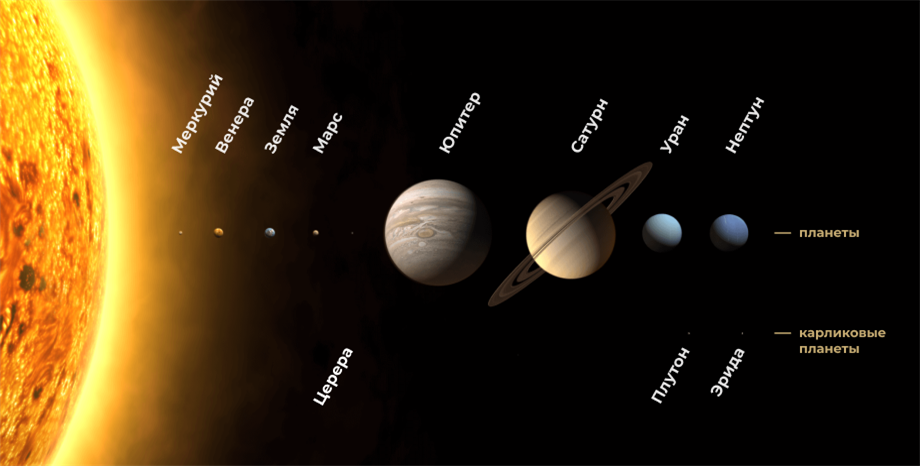
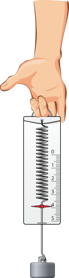
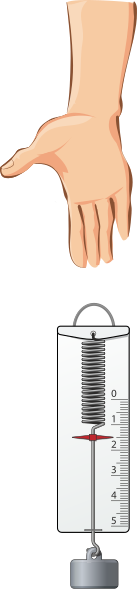
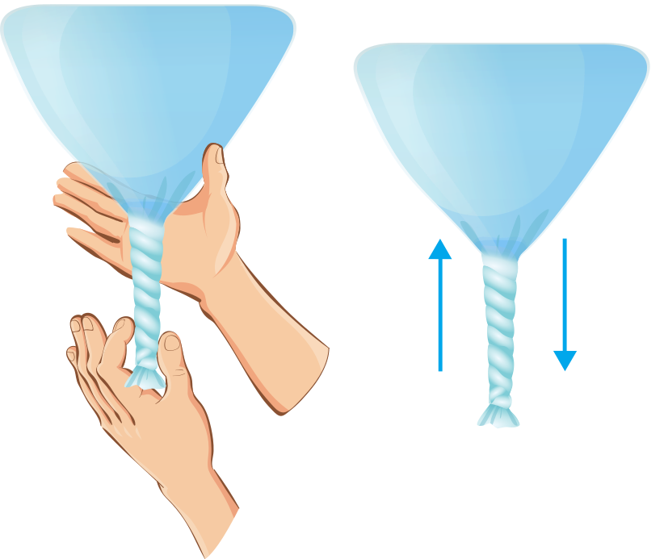

Тема 1.2: Основы динамики
Законы Ньютона, силы в природе и биомеханика • 6 академических часов
1. Взаимодействие тел. Законы Ньютона
Динамика — раздел механики, изучающий причины изменения движения тел.
- I закон (инерции): Существуют системы отсчета (инерциальные), в которых тело покоится или движется равномерно и прямолинейно, если на него не действуют силы или их действие скомпенсировано.
- II закон: Ускорение тела прямо пропорционально равнодействующей сил и обратно пропорционально массе тела.
- III закон: Силы, с которыми два тела действуют друг на друга, равны по модулю, противоположны по направлению и действуют вдоль прямой, соединяющей эти тела.
2. Сложение сил (Принцип суперпозиции)
Силы — векторные величины. Если на тело действует несколько сил, их заменяют равнодействующей.
- Силы сонаправлены (угол 0°): Fрез = F1 + F2.
- Силы противоположны (угол 180°): Fрез = |F1 - F2|.
- Силы перпендикулярны (угол 90°): Fрез = √(F12 + F22) (по теореме Пифагора).
3. Сила упругости. Закон Гука
Возникает при деформации тела и стремится вернуть его в исходное состояние. Направлена противоположно деформации.
4. Сила трения
Препятствует движению одного тела по поверхности другого.
5. Закон всемирного тяготения
Все тела во Вселенной притягиваются друг к другу с силой, прямо пропорциональной произведению их масс и обратно пропорциональной квадрату расстояния между ними.
Сила тяжести (Fтяж) — это сила, с которой Земля притягивает к себе тело.
6. Вес тела. Невесомость. Перегрузки
Вес тела (P) — сила, с которой тело давит на опору или подвес. В покое P = m * g.
Перегрузка: Возникает при движении с ускорением вверх (или торможении вниз).
Частичная невесомость: Возникает при движении с ускорением вниз (или торможении вверх).
Невесомость: Возникает при свободном падении (a = g).
7. Космические скорости
Первая космическая скорость (v1) — минимальная скорость для выхода на орбиту вокруг планеты (для Земли ≈ 7,9 км/с).
Вторая космическая скорость (v2) — скорость для преодоления гравитации планеты и выхода в космос (для Земли ≈ 11,2 км/с).
Векторы сил, действующих на тело
🎯 Шпаргалка для Практической работы №2
Формулы, которые понадобятся для решения задач:
1. Связь кинематики и динамики:
Если известны путь S и конечная скорость v (начиная с нуля): ускорение a = v² / (2S). Затем по II закону Ньютона: F = m * a.
2. Сила трения:
Fтр = μ * N. Если тело на горизонтальной поверхности, N = m * g.
3. Система связанных тел (блок):
Ускорение: a = (m₁ - m₂)g / (m₁ + m₂).
Сила натяжения нити: T = 2m₁m₂g / (m₁ + m₂).
4. Механическая прочность (давление/напряжение):
σ = F / S, где F — сила (Н), S — площадь (м²). Отсюда сила: F = σ * S.
📝 Примеры решения типовых задач
Пример 1 (II закон Ньютона): Тело массой 2 кг движется с ускорением 3 м/с². Какая сила действует на тело?
Решение: F = m * a = 2 кг * 3 м/с² = 6 Н.
Пример 2 (Перегрузка): Космонавт массой 80 кг находится в ракете, которая стартует с ускорением 20 м/с². Каков вес космонавта? (g = 10 м/с²).
Решение: Ракета движется вверх с ускорением, значит возникает перегрузка. P = m * (g + a) = 80 * (10 + 20) = 2400 Н.
🩺 Связь с медициной
- Перегрузки: Летчики и космонавты испытывают перегрузки до 5-9g. Это вызывает отлив крови от головы к ногам и может привести к потере сознания.
- Невесомость: В космосе отсутствие гравитационной нагрузки приводит к потере костной массы (остеопороз) и атрофии мышц.
- Ортостатический коллапс: При резком вставании возникает эффект "частичной невесомости" для крови — она отливает от мозга.
- Сила упругости в медицине: Эластичность сосудов, сухожилий и хрусталика глаза основана на законе Гука.
🧪 Быстрый опыт: Измерение времени реакции
Ход: Один студент держит линейку (отметка 0 см между пальцами второго). Отпускает без предупреждения. Второй ловит. Расчет времени: t = √(2h / g). Норма для человека 0,15–0,25 с.
Подробная теория (для самостоятельного изучения)
1. Инерция. Первый закон Ньютона
Инерция — это явление сохранения скорости движения тела при отсутствии внешних воздействий.
💡 Обрати внимание!
По закону инерции, материальная точка сохраняет свою скорость при отсутствии воздействия на него внешних сил или при уравновешивании действия этих сил.
С явлением инерции мы сталкиваемся ежедневно, поэтому необходимо знать её положительные и отрицательные свойства. При ловле мяча нужно отступать по траектории движения, смягчая удар. Иначе можно получить травму. При торможении транспорта необходимо постараться продолжить движение по прежней траектории, чтобы избежать столкновения с деталями транспорта.
До принятия закона инерции древнегреческий учёный Аристотель и его последователи считали, что тело не может двигаться с постоянной скоростью без постоянного воздействия внешних сил.
Первым отверг такие представления Галилео Галилей. Он предположил, что в результате взаимодействий любого тела с другими телами происходят изменения скорости его движения. При отсутствии действия других тел скорость тела не изменяется ни по модулю, ни по направлению. Таким образом, Галилей пришёл к выводу:
При отсутствии внешних воздействий тело может не только покоиться, но и двигаться прямолинейно и равномерно.
Внешние силы необходимы для компенсации потерь энергии из-за силы трения.
💡 Обрати внимание!
После прекращения воздействий тело движется равномерно и прямолинейно по касательной к первоначальной траектории движения.
На основе вывода Галилея английский учёный Исаак Ньютон сформулировал закон инерции.
Если на тело не действуют силы или их действие скомпенсировано, то данное тело находится в состоянии покоя или равномерного прямолинейного движения.
Закон инерции называют первым законом Ньютона, или первым законом механики.
Инертность — это свойство тела, которое характеризует его способность «сопротивляться» изменению скорости.
Насколько инертным является тело, определяется его массой (в физике вводится термин «инертная масса»).
2. Инерциальные и неинерциальные системы отсчета
Со временем выяснилось, что первый закон Ньютона выполняется не во всех системах отсчёта.
Проведём опыт. Подвесим над тележкой один шарик, а другой положим внутрь грузового отсека тележки. Запустим установку так, чтобы она двигалась по поверхности стола с постоянной скоростью в одном направлении (рис. 1).

1. Сила тяжести первого шарика уравновешена силой натяжения троса, поэтому нет движения вертикального направления: T1 + m1g = m1a.
2. Сила тяжести второго шарика уравновешена силой реакции опоры, поэтому нет движения вертикального направления: N2 + m2g = m2a.
3. Сила тяжести всей системы тележки с шариками уравновешена силой реакции опоры (Земли), поэтому нет движения вертикального направления: N3 + (m1+m2+m3)g = (m1+m2+m3)a.
В горизонтальном направлении нет сил, которые бы изменяли скорости движения шариков и тележки. Поэтому скорость движения всей системы и каждого элемента в горизонтальном направлении постоянна: v = const.
Но когда тележка попадёт на песочную насыпь (рис. 2), то она быстро остановится, так как её скорость быстро уменьшается. При снижении скорости шарики начинают двигаться относительно тележки по инерции. В этом случае изменение скорости шариков не связано с действием на них каких-либо сил.

В системе отсчёта, связанной с тележкой, движущейся с ускорением (в данном случае с замедлением), закон инерции не выполняется.
Если тело относительно системы отсчёта имеет ускорение даже в отсутствие действия на него других тел или внешних сил, то в такой системе не выполняется закон инерции.
Первый закон Ньютона: всегда можно найти инерциальную систему отсчёта, в которой выполняется закон инерции: если на тело не действуют силы или их действие компенсировано, то тело будет находиться в состоянии покоя или двигаться прямолинейно и равномерно.
Первый закон Ньютона устанавливает существование инерциальных систем отсчёта (ИСО).
Неинерциальными называют системы отсчёта, в которых закон инерции не выполняется.
Одно и то же тело может находиться в состоянии покоя в одной системе отсчёта и двигаться с ускорением в другой системе отсчёта.
Пример: в самолёте, пикирующем вниз с ускорением свободного падения, пилот находится в состоянии покоя в системе отсчёта, связанной с самолётом. Одновременно в системе отсчёта, связанной с Землёй, этот пилот движется вместе с самолетом с ускорением свободного падения.
В большинстве вопросов о движении на поверхности Земли будем принимать Землю за систему отсчёта, потому что нарушения закона инерции для Земли как для системы отсчёта малы. Изучая движение планет будем выбирать для системы отсчета Солнце и звёзды.
Всегда можно найти (выбрать) систему отсчёта, которая с заданной степенью точности является инерциальной.
3. Сложение сил. Второй закон Ньютона
1. Сложение сил
💡 Обрати внимание!
Силы — векторные величины, они характеризуются модулем и направлением. Поэтому при сложении сил применяют законы сложения векторов.
1. Угол между векторами равен 0°. Если силы параллельны и сонаправлены, то их модули складываются. Для вычислений используют формулу: Fрез = F1 + F2.

Пример: двое детей тянут санки, помогая друг другу. Поэтому результирующая сила всегда больше, чем сила тяги каждого ребёнка, взятая по отдельности.
2. Угол между векторами равен 180°. Если силы параллельны и противоположно направлены, то их модули вычитаются. Результирующая сила всегда положительна, так как разность берётся по модулю. Для вычислений используют формулу: Fрез = |F1 − F2|.

Пример: если санки тянуть по поверхности, на которой нет ни снега, ни льда, то сила трения действует противоположно силе тяги. Поэтому результирующая сила меньше, чем сила тяги.
3. Угол между векторами равен 90°. Если силы взаимно перпендикулярны, то их результирующая сила находится по теореме Пифагора. Обе силы являются катетами прямоугольного треугольника, а результирующая сила — гипотенузой. Для вычислений используют формулу: Fрез = √(F12 + F22).

Пример: если ехать на велосипеде при сильном боковом ветре, то велосипед заносит в сторону, так как результирующая сила направлена в сторону от направления движения.
2. Принцип суперпозиции сил
Сила характеризуется:
- направлением,
- величиной,
- точкой приложения (началом вектора), геометрическое положение которой зависит от того, какая именно сила действует на тело.
Принцип суперпозиции: при действии на тело нескольких сил F1, F2...Fn, результирующая (равнодействующая) сила равна Fp = F1 + F2 + ... + Fn.

На рисунке 6 изображён брусок, на который действуют сила тяжести mg, сила реакции опоры N и сила трения Fтр. Красным вектором обозначена результирующая сила Fрез.

3. Второй закон Ньютона
Обобщение экспериментальных фактов по выявлению взаимосвязи между ускорением и вызывающей его силой является основанием второго закона Ньютона.
Формулировка второго закона Ньютона: ускорение тела прямо пропорционально равнодействующей сил, действующих на тело, и обратно пропорционально массе тела.
Математическое выражение:
Масса m, входящая в формулировку второго закона Ньютона, называется инертной массой.
На практике при решении задач удобнее использовать следующую форму второго закона Ньютона.
Равнодействующая сил, приложенных к телу, прямо пропорциональна произведению массы тела на его ускорение:
Равнодействующая сил — векторная сумма сил, приложенных к телу. Её можно найти по принципу суперпозиции сил.
Если на тело действуют силы F1, F2, …, то результирующая сила есть векторная сумма этих сил:
а тело приобретает ускорение, которое вызвано действием одной силы, равной по модулю и направлению вектору результирующей (или равнодействующей) силы Fp.
Пример: запишем следствие из второго закона Ньютона для системы «поверхность — блок», изображённой на рисунке 7.

В горизонтальном направлении на блок действуют силы F и Fтр, тело имеет ускорение a.
В вертикальном направлении на блок действуют силы mg и N, но ускорения нет (тело движется по поверхности, а не «улетает» вверх). Следствия из второго закона Ньютона:
- в векторном виде: F + Fтр + mg + N = ma;
- в проекциях на оси OX и OY:
OX: F – Fтр = ma,
OY: N – mg = 0.
Чтобы рассчитать величину проекции результирующей силы на выбранное направление, требуется определить величины проекций на это направление всех сил, действующих на тело, и сложить их.
Пример: величина проекции силы F на ось OX, где F = F1 + F2 (рис. 8):

4. Третий закон Ньютона
Взаимодействие двух тел — это всегда двусторонний процесс.
Пример: рассмотрим процесс вбивания гвоздя молотком (рис. 9). Изменение энергии молотка, позволяет совершать работу по забиванию гвоздя. Металлическая часть молотка воздействует на шляпку гвоздя, что вызывает сопротивление бруска при забивании гвоздя. Эта сила противодействует силе молотка. Поэтому молоток останавливается.
Проведём опыт. Сцепим два динамометра вместе. Показания динамометров будут одинаковы (рис. 10). Следовательно, динамометры взаимодействуют равными по модулю и противоположно направленными силами.

💡 Обрати внимание!
Тела действуют друг на друга с равными по модулю силами и в том случае, если взаимодействие происходит на расстоянии.
Напомним, что во время работы с динамометром следует избегать перегрузки прибора, чтобы длина пружины не превышала установленный лимит на шкале. Важно также не тянуть пружину динамометра вручную, так как это может привести к повреждению устройства и неправильно измеренному результату.
К одному из динамометров прикрепим металлический брусок, а к другому — магнит (рис. 11).

Сначала динамометры разведём на такое расстояние, при котором силы взаимодействия магнита и металлического бруска практически равны нулю. В данный момент оба динамометра будут показывать «0».
Если начинать сближать динамометры (перемещать один из них или оба сразу), то стрелки динамометров начнут отклоняться. Интересен тот факт, что отклонение от нуля происходит в разные стороны. Это означает, что силы взаимодействия магнита и металлического бруска противоположны по направлению. Показания динамометров в данном случае будут одинаковы.
Третий закон Ньютона: Силы взаимодействия двух тел равны по величине, противоположно направлены, и действуют вдоль прямой, соединяющей эти тела:
Знак равенства обозначает, что действие равно противодействию, силы возникают попарно. Знак минуса означает, что силы действуют противоположно направленно, их векторная сумма равна нулю.
Как этот закон применяется для объяснения явлений? Например, метеорит падает на землю, поскольку Земля притягивает его с силой тяжести F=mg. Однако, метеорит притягивает Землю с точно такой же по величине силой. Поскольку масса Земли чрезвычайно велика, её перемещение под действием этой силы пренебрежимо мало.
💡 Обрати внимание!
Силы, возникающие в результате взаимодействия тел, являются силами одной природы.
Пример: все тела действуют на опору или подвес благодаря гравитации — силе притяжения между телом и Землёй. Под действием силы тяжести опора деформируется: скамейка изгибается, полка под весом книг провисает. Опора стремится вернуть исходное положение, что вызывает силы упругости, с которыми опора воздействует на тело (рис. 12).

Вес тела P приложен к опоре и направлен вертикально вниз к центру Земли. Противодействует весу сила реакции опоры N, поэтому она направлена перпендикулярно поверхности опоры.
Пример: два тела массами m1 и m2 помещены на гладкую горизонтальную плоскость и связаны друг с другом нерастяжимой нитью. Ко второму телу в горизонтальном направлении приложена сила. Определим ускорение обоих тел.

- На рисунке 13 показаны силы, действующие на тела в горизонтальном направлении.
- Нить нерастяжима, что означает движение тел с одинаковым ускорением.
- Запишем следствие из второго закона Ньютона в векторной форме:
m1a = T1 + m1g + N1,
m2a = T2 + F + m2g + N2. - Введём ось координат OX. Запишем следствие из второго закона Ньютона в скалярной форме, спроецировав векторы сил и ускорения:
m1a = T1
m2a = -T2 + F - По третьему закону Ньютона T1 = -T2 и T1 = T2 = T.
- Подставим:
m1a = T
m2a = -T + F - Складывая правые и левые части первого и второго уравнения системы, получим:
5. Сила тяжести. Закон всемирного тяготения
1. Закон всемирного тяготения
В современной науке встречающиеся в природе взаимодействия разделяются на три типа:
- гравитационное,
- сильное (ядерное),
- электрослабое (объединяет электромагнитное и слабое).
Слабое и сильное взаимодействия характерны для описания физических процессов с элементарными частицами и проявляются на расстояниях, где законы Ньютона не применимы (микромир), что и обуславливает их короткодействующий характер.
При описании макроскопических физических явлений электромагнитное взаимодействие описывается законами классической электродинамики и проявляется независимо от слабого.
Гравитационное и электромагнитное взаимодействия являются дальнодействующими: они обнаруживаются на расстояниях, которые «характеризуют» физические явления от молекулярного уровня до движения космических объектов.
Одна из важнейших в природе сил — сила гравитации, или сила тяготения. Она действует на все тела во Вселенной.
Существует миф о том, что Ньютон открыл закон всемирного тяготения после того, как ему на голову упало яблоко. Так это или нет доподлинно неизвестно, но именно Ньютон изучал движение планет вокруг Солнца и открыл математическую формулу для расчета взаимодействия тел определенной массы. Эту формулу мы называем законом всемирного тяготения. Сила взаимодействия двух тел прямо пропорциональна массе каждого из этих тел и обратно пропорциональной квадрату расстояния между центрами этих тел:
Физический смысл гравитационной постоянной: гравитационная постоянная G показывает, с какой силой притягиваются между собой два тела массой 1 кг каждое, расположенные на расстоянии 1 м друг от друга в гравитационном поле.
Для решения задач закон всемирного тяготения применяют, если:
- тела являются точечными (т. е. размеры тел значительно меньше расстояния между ними);
- тела представляют собой два однородных шара;
- тело неопределенной формы находится на поверхности шарообразного и однородного тела большого размера и массы (по сравнению с телом неопределенной формы).

Третий закон Ньютона мы используем для расчёта силы тяжести на поверхности Земли или вблизи неё. Поэтому за расстояние между телами берём радиус Земли: R = 6370 км.

Сила притяжения яблока к Земле равна силе притяжения Земли к яблоку по модулю: |Fя| = |Fз|.
Силы притяжения между телами равны по модулю, но противоположны по направлению: Fя = -Fз.
Значение ускорения Земли, обусловленное притяжением со стороны яблока настолько мало, что при расчёте задач его не учитывают.
Инертная и гравитационная массы
Введение двух физических понятий для массы — инертная и гравитационная — обусловлено спецификой их измерения.
Запишем следствие из II закона Ньютона (скалярное уравнение): F = mаa, где mа — инертная масса тела.
Запишем закон всемирного тяготения (скалярное уравнение) для тела, находящегося на поверхности Земли:
Приравняем формулы, рассматривая свободное падение тела: mаa = mгg, тогда a = (mг/mа) * g.
2. Ускорение свободного падения
Ускорение свободного падения характеризует то, как быстро будет увеличиваться скорость тела при свободном падении. Свободным падением называется ускоренное движение тела в безвоздушном пространстве, при котором на тело действует только сила тяжести.
Ускорение свободного падения в упрощённом виде можно рассчитать по формуле g = F / m, которая получается из формулы F = m * g, где F — сила тяжести либо вес тела в состоянии покоя или равномерного прямолинейного движения, m — масса тела, которое притягивает планета, g — ускорение свободного падения.
💡 Обрати внимание!
Если мы объединим обе формулы, тогда получим формулу g = G * M / R2, с помощью которой можно вычислить ускорение свободного падения на любом космическом объекте — на планете или звезде.
Практически на Земле ускорение свободного падения на полюсах немного больше (9,832 м/с²), чем на экваторе (9,78 м/с²), так как Земля не имеет форму идеального шара, а на экваторе скорость вращения больше, чем на полюсах. Среднее значение ускорения свободного падения у поверхности Земли равно 9,8 м/с².
Ускорение свободного падения у поверхности любого космического тела зависит от массы этого тела и квадрата его радиуса. Таким образом, чем больше масса звезды и чем меньше её размеры, тем больше значение ускорения свободного падения у её поверхности. При помощи формулы расчёта ускорения свободного падения и измерений, проведённых для удалённых объектов, учёные-физики могут определить величину ускорения свободного падения на любой планете или звезде.

Таблица 1. Ускорение свободного падения и другие характеристики планет Солнечной системы
| Небесное тело | Ускорение св. падения, м/с² | Диаметр, км | Расстояние до Солнца, млн км | Масса, кг | Соотношение с массой Земли |
|---|---|---|---|---|---|
| Меркурий | 3,7 | 4878 | 58 | 3,3·1023 | 0,055 |
| Венера | 8,87 | 12103 | 108 | 4,9·1024 | 0,82 |
| Земля | 9,81 | 12756,2 | 150 | 6,0·1024 | 1 |
| Марс | 3,76 | 7942 | 228 | 6,4·1023 | 0,11 |
| Юпитер | 24,8 | 142984 | 778 | 1,9·1027 | 317,8 |
| Сатурн | 10,4 | 120536 | 1427 | 5,7·1026 | 95,0 |
| Уран | 8,87 | 51118 | 2871 | 8,7·1025 | 14,4 |
| Нептун | 10,15 | 49532 | 4498 | 1,02·1026 | 17,1 |
| Луна | 1,62 | 3473,8 | 0,384 (до Земли) | 7,35·1022 | 0,0123 |
| Солнце | 274,0 | 1391000 | — | 2,0·1030 | 332900 |
Нейтронные звёзды имеют малый диаметр — порядка десятков километров, — а масса их сопоставима с массой Солнца. Поэтому гравитационное поле у них очень сильное.
Пример: если диаметр нейтронной звезды равен 20 км, а масса её в 1,4 раза больше массы Солнца, тогда ускорение свободного падения будет в 200 000 000 000 раз больше, чем у поверхности Земли. Его величина приблизительно равна 2·1012 м/с². Значение ускорения свободного падения для нейтронной звезды может достигать значения 7·1012 м/с².
Движение тел под действием силы тяжести подчиняется закону Галилея.
| Обобщённый закон Галилея | Вывод |
|---|---|
| Падение тел в одинаковых полях тяготения происходит с одинаковым ускорением. | Значение ускорения свободного падения g в конкретном месте Земли является одинаковым для всех тел. |
Ситуация 1: тело массой m расположено на поверхности Земли (M — масса Земли, R — радиус Земли). Пренебрегаем суточным вращением Земли вокруг своей оси. F = m * g = Fграв. тяготения; m * g = G * (m * M) / R2; g = G * M / R2.
Ситуация 2: тело массой m расположено на высоте h от поверхности Земли. Пренебрегаем суточным вращением Земли вокруг своей оси. F = m * g = Fграв. тяготения; m * g = G * (m * M) / (R + h)2; g = G * M / (R + h)2.
6. Вес тела. Невесомость. Космические скорости
1. Космические скорости
Движение искусственных спутников — это движение тел, выведенных человеком на орбиту вокруг небесного тела (планеты, Солнца) и движущихся под действием сил всемирного тяготения.
Классическим примером служат спутники Земли: от первого «Спутника-1» до современных космических аппаратов, таких как МКС или метеоспутники, которые обращаются вокруг планеты. Им на смену приходят межпланетные станции, уходящие к другим небесным телам. Чтобы вывести аппарат на околоземную орбиту, ему необходимо сообщить первую космическую скорость (≈7,9 км/с), позволяющую преодолеть земное притяжение и стать спутником. Для полётов к другим планетам требуется достичь второй космической скорости (≈11,2 км/с), которая навсегда уводит корабль из сферы действия Земли.
Первая космическая (круговая) скорость
- Наименьшая скорость тела, которое вращается в гравитационном поле планеты.
- На вращающееся тело (m) действует сила тяготения со стороны планеты (M, R), сообщающая ему центростремительное ускорение v2/R (данное утверждение справедливо для инерциальной системы отсчёта).
- Второй закон Ньютона для вращающегося тела: G * (m * M) / R2 = m * v2 / R. (1)
- Формула первой космической скорости (следует из равенства (1)):
Вторая космическая (параболическая) скорость
- Наименьшая скорость тела, преодолевающего гравитационное поле планеты и движущегося по параболической траектории.
- Формула второй космической скорости:
Примечание: Если движение тела происходит на расстоянии h от поверхности планеты, то R в формулах заменяется на (R+h).
2. Вес на различных планетах
Повседневно мы воспринимаем вес и массу тела как одно и то же. Обе эти величины очень связаны друг с другом, но это не одно и то же. Масса тела зависит от количества молекул и атомов в теле, её обозначают m и измеряют в килограммах. А вес — это сила, с которой тело действует на другие тела в результате гравитации, его обозначают P и измеряют в ньютонах, Н. Вес тела — это сила, с которой тело давит на поверхность или растягивает подвес, на котором оно висит.
💡 Обрати внимание!
Вес тела на Земле одинаков с силой тяжести, если тело находится в состоянии покоя или прямолинейного равномерного движения. Если тело ускоренно движется, тогда значения веса тела и силы тяжести могут отличаться.
Вес тела определяют по формуле P = m * g, где P — вес тела, Н; m — масса тела, кг; g — ускорение свободного падения, м/с².
Устройство, которое используется для определения массы тела, называют весами, хотя на самом деле весы измеряют не массу, а вес тела. При градуировке шкалы весов учитывается, что, если вес тела на Земле равен 9,8 Н, то масса такого тела равна 1 кг. Если бы массу тела попытались определить при помощи весов на космической станции, которая находится в состоянии невесомости, тогда измерить вес тела не удалось бы, так как в этом случае вес тела был бы равен нулю, поскольку тело в состоянии невесомости не давит на поверхность весов. Следовательно, вес тела можно определить в гравитационном поле только тогда, когда тело не находится в состоянии невесомости (в состоянии свободного падения).
В Солнечной системе имеется восемь планет, и для каждой планеты характерна своя величина ускорения свободного падения. Это означает, что на каждой из планет одно и то же тело будет иметь различный вес.
Таблица 1. Величина ускорения свободного падения вблизи поверхности различных планет Солнечной системы
| Небесное тело | Ускорение свободного падения, м/с² |
|---|---|
| Меркурий | 3,7 |
| Венера | 8,87 |
| Земля | 9,8 |
| Марс | 3,7 |
| Юпитер | 24,8 |
| Сатурн | 10,4 |
| Уран | 8,87 |
| Нептун | 10,15 |
| Плутон | 0,66 |
| Луна | 1,62 |
| Солнце | 274,0 |
На Земле ускорение свободного падения в 6 раз больше, чем на Луне, поэтому вес космонавта на Луне будет в 6 раз меньше, чем на Земле. Космонавт с массой 120 кг на Земле весит P = 120 · 9,8 = 1176 Н, а на Луне его вес будет P = 120 · 1,6 = 192 Н.
Если нашими обычными весами измерить вес космонавта на Луне, тогда показание на шкале весов было бы не 120 кг, а всего лишь 20 кг. На Солнце ускорение свободного падения почти в 28 раз больше, чем на Земле, поэтому на нём все тела казались бы тяжелее в 28 раз. Если бы мы могли космонавта с массой в 120 кг взвесить на поверхности Солнца, то весы показали бы, что космонавт весит 3355 кг. Конечно, в реальности это сделать мы не смогли бы, так как поверхность Солнца раскалена до температуры примерно 6000°С.
3. Изменение веса при движении
💡 Обрати внимание!
Запомни! Масса и вес — это не одно и то же!
Масса зависит от количества вещества в теле. Чем больше атомов и молекул содержится в теле, тем больше его масса. Вес — это сила, с которой тело давит на ту поверхность, на которой оно находится, или сила, с которой тело натягивает подвес, на котором оно висит.
Пример: масса яблока больше массы яблочного семечка, так как в яблоке больше атомов, чем в яблочном семечке.
На Луне вес тела примерно в 6 раз меньше, чем на Земле, поскольку поле гравитации Луны примерно в 6 раз слабее поля гравитации Земли, и ускорение свободного падения на Луне, соответственно, меньше, чем на Земле.
Вес тела определяют путём умножения массы тела на ускорение свободного падения: P = m * g, где P — вес тела, Н; m — масса тела, кг; g — ускорение свободного падения, м/с².
Таким весом обладают тела, находящиеся в состоянии покоя или равномерного движения. В таком случае вес тела одинаков с силой тяжести: P = Fт.
💡 Обрати внимание!
Если тело движется ускоренно в вертикальном направлении, тогда возникает изменение веса тела.
Мы ощущаем это так, будто нас «вдавливает» в пол, или так, будто мы «зависаем» в воздухе. Лучше всего это можно ощутить при езде на американских горках или в лифтах высотных зданий, которые резко начинают подъём и спуск.
Вес увеличивается:
- когда лифт резко начинает движение вверх, находящиеся в лифте люди испытывают ощущение, будто их «вдавливает» в пол;
- когда лифт резко уменьшает скорость движения вниз, тогда находящиеся в лифте люди из-за инерции сильнее «вжимаются» ногами в пол лифта;
- когда на американских горках проезжают через нижнюю точку горок, находящиеся в тележке люди испытывают ощущение, будто их «вдавливает» в сиденье.
Вес уменьшается:
- при быстрой езде на велосипеде по небольшим пригоркам велосипедист на вершине пригорка испытывает ощущение лёгкости;
- когда лифт резко начинает движение вниз, находящиеся в лифте люди ощущают, что уменьшается их давление на пол, возникает ощущение свободного падения;
- когда на американских горках проезжают через высшую точку горок, находящиеся в тележке люди испытывают ощущение, будто их «подбрасывает» в воздух;
- когда на качелях раскачиваются до наивысшей точки, ощущается, что на короткий момент тело «зависает» в воздухе.
Изменение веса связано с инерцией — стремлением тела сохранять своё начальное состояние. Поэтому изменение веса всегда противоположно ускорению движения. Когда ускорение движения направлено вверх, вес тела увеличивается. А если ускорение движения направлено вниз, вес тела уменьшается.

На рисунке 17 красными стрелками изображено направление ускорения движения.
- Если лифт неподвижен или равномерно движется, то ускорение равно нулю. В этом случае вес человека нормальный, он равен силе тяжести и определяется так: P = m * g.
- Если лифт движется ускоренно вверх или уменьшает свою скорость при движении вниз, то ускорение направлено вверх. В этом случае вес человека увеличивается и определяется так: P = m * (g + a). В данном случае для тела наступает состояние перегрузки.
- Если лифт движется ускоренно вниз или уменьшает свою скорость при движении вверх, то ускорение направлено вниз. В этом случае вес человека уменьшается и определяется так: P = m * (g – a).
- Если человек находится в объекте, который свободно падает, то ускорение движения направлено вниз и одинаково с ускорением свободного падения: a = g. В этом случае вес человека равен нулю: P = 0. В этом случае для тела наступает состояние невесомости.
Пример: масса человека — 80 кг. Человек входит в лифт, чтобы подняться наверх. Ускорение движения лифта составляет 7 м/с². Чему равен вес тела на каждом этапе движения?
Решение:
- Лифт стоит на месте, и вес человека составляет: P = m * g = 80 * 9,8 = 784 Н.
- Лифт начинает двигаться наверх с ускорением 7 м/с², и вес человека увеличивается: P = m * (g + a) = 80 * (9,8 + 7) = 1334 Н.
- Лифт набрал скорость и едет равномерно, при этом вес человека составляет: P = m * g = 80 * 9,8 = 784 Н.
- Лифт при движении вверх тормозит с отрицательным ускорением (замедлением) 7 м/с², и вес человека уменьшается: P = m * (g − a) = 80 * (9,8 − 7) = 224 Н.
- Лифт полностью остановился, вес человека составляет: P = m * g = 80 * 9,8 = 784 Н.
4. Невесомость
Состояние невесомости встречается в ситуациях, когда человек располагается в объекте, который находится в свободном падении. Есть специальные самолёты, которые предназначены для создания состояния невесомости. Они поднимаются на определённую высоту, и после этого самолёт переводится в свободное падение в течение примерно 30 секунд. Во время свободного падения самолёта находящиеся в нём люди ощущают состояние невесомости.
Состояние невесомости ощущают космонавты на орбитальной космической станции, так как она находится в состоянии свободного падения по отношению к Земле. Орбитальная космическая станция непрерывно стремится упасть на Землю, но скорость её движения так велика, что станция всё время попадает мимо Земли. Все тела, находящиеся на орбите Земли, находятся в свободном падении, а скорость их движения одинакова с первой космической скоростью — 7,91 км/с, поэтому они не могут упасть на Землю.
Если тело находится на опоре и движется с ускорением a, направленным к центру Земли, то его вес определяется по формуле: P = m(g − a), где g — ускорение свободного падения.
Продемонстрируем это на опыте.
1. Вес грузика на динамометре приблизительно равен 4 Н. Это сила тяжести, которая равна силе упругости пружины динамометра (рис. 18).

2. При отпускании динамометра пружина стремится вернуться в недеформированное состояние. При этом показания динамометра будут меньше веса груза в состоянии покоя (рис. 19).

3. В свободном падении динамометр не оказывает воздействия на опору или подвес. Поэтому его вес равен нулю. При движении динамометра и груза с равным ускорением отсутствует взаимодействие между ними.
Невесомость — состояние, при котором сила взаимодействия тела с опорой или подвесом (вес тела), возникающая в связи с гравитационным притяжением, пренебрежимо мала.
Проведём опыт. В полиэтиленовый пакет нальём воды, закрутим его верхнюю часть и завяжем узлом (рис. 20).
Если перевернуть полиэтиленовый пакет, то под действием веса воды он раскрутится, и вода перельётся вниз (рис. 21).
Если подбросить полиэтиленовый пакет, то во время полёта жидкость не будет переливаться в нижнюю часть пакета (рис. 22). Это означает, что она находится в невесомости. В данном случае начальная скорость пакета не была равна нулю. Следовательно, тело может быть невесомым, имея любую начальную скорость.

Во время полёта отсутствует опора или подвес, на которые мог воздействовать вес пакета с жидкостью.
Явление невесомости использовалось для тренировки космонавтов в самолётах. Невесомостью обладают объекты в космосе, удалённые от массивных тел, которые могли бы оказывать гравитационное притяжение.
7. Сила упругости. Закон Гука
Если деформации образца малы и являются упругими, величина силы, стремящейся восстановить его геометрические параметры, прямо пропорциональна удлинению.

На рисунке 23 показаны:
- l0 — длина тела в исходном состоянии;
- l1 — длина тела в результате действия силы F;
- Δx = l1 - l0 — удлинение тела;
- F — внешняя сила, вызывающая изменение длины тела;
- Fу — сила упругости, равная по величине F.
Закон Гука для проекции силы упругости на координатную ось, параллельную силе упругости:
Знак «минус» показывает, что Fy направлена противоположно направлению деформирующей силы.
📝 Домашнее задание
Вам необходимо выполнить тест и задачи для закрепления материала. Ответы скрыты, так как вам нужно будет отправить их учителю через специальную форму.
Тест (Выберите один правильный ответ)
1. Чем отличается вес тела от массы?
2. При каком условии возникает перегрузка?
3. Как направлена сила упругости?
Задачи для самостоятельного решения (решите в тетради)
- Задача 1. Космонавт массой 80 кг находится на Луне (g = 1,6 м/с²). Найдите его вес и массу.
- Задача 2. Лифт движется вниз с ускорением 2 м/с². Найдите вес человека массой 70 кг, находящегося в лифте (g = 10 м/с²).
- Задача 3. Пружина жесткостью 200 Н/м растянулась на 5 см. Найдите силу упругости.
После того как решите все задания в тетради, перенесите ответы в форму:
📤 Сдать домашнее задание (Google Форма)(Ссылка ведет на внешний ресурс. Откроется в новой вкладке).